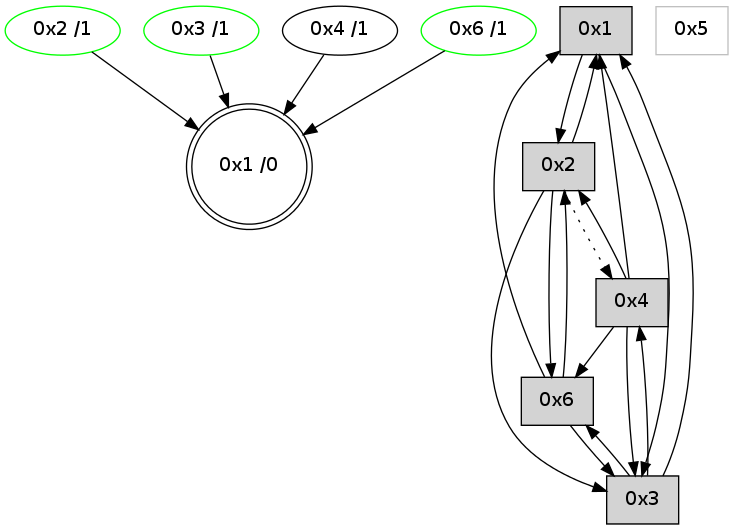

>> << IDX [start] -100 -25 -5 +0 +5 +25 +100 [715.182809114]
 Previous packets
----------------------------------------------------------------------
710.261726 beacon01(adaf) #0 coord=01,02,05,03,04,06 cycle=432.0ms assoc
-- color-indic=0 64 46 05
710.271686 beacon02(adaf) #0 coord=01,02,05,03,04,06 cycle=432.0ms assoc 64 17 fa
710.281687 beacon05(adaf) #0 coord=01,02,05,03,04,06 cycle=432.0ms assoc 64 b1 d0
710.291687 beacon03(adaf) #0 coord=01,02,05,03,04,06 cycle=432.0ms assoc 64 2d f4
710.301689 beacon04(adaf) #0 coord=01,02,05,03,04,06 cycle=432.0ms assoc 64 8b de
710.311687 beacon06(adaf) #0 coord=01,02,05,03,04,06 cycle=432.0ms assoc 64 ff c2
710.323375 [Hello(3): seq=511 sym=4,2,1,6 sysInfo=hasWarning stat=4:3,0,2,0/2:0,0,1,1/1:9,0,4,0/6:7,0,11,3]
----------------------------------------------------------------------
710.753834 beacon01(adaf) #0 coord=01,02,05,03,04,06 cycle=432.0ms assoc
-- color-indic=0 64 9e 41
710.763796 beacon02(adaf) #0 coord=01,02,05,03,04,06 cycle=432.0ms assoc 64 cf be
710.773796 beacon05(adaf) #0 coord=01,02,05,03,04,06 cycle=432.0ms assoc 64 69 94
710.783796 beacon03(adaf) #0 coord=01,02,05,03,04,06 cycle=432.0ms assoc 64 f5 b0
710.793797 beacon04(adaf) #0 coord=01,02,05,03,04,06 cycle=432.0ms assoc 64 53 9a
710.803796 beacon06(adaf) #0 coord=01,02,05,03,04,06 cycle=432.0ms assoc 64 27 86
710.815470 [Hello(4): seq=513 sym=6,3,1 sysInfo= stat=6:0,0,0,0/3:4,0,9,7/1:5,0,8,0]
710.821158 [Hello(1): seq=412 sym=2,6,3,4 sysInfo= stat=2:4,0,4,4/6:1,0,2,2/3:2,0,7,7/4:0,0,2,0]
----------------------------------------------------------------------
711.245942 beacon01(adaf) #0 coord=01,02,05,03,04,06 cycle=432.0ms assoc
-- color-indic=0 64 5a 2e
711.255902 beacon02(adaf) #0 coord=01,02,05,03,04,06 cycle=432.0ms assoc 64 0b d1
711.265904 beacon05(adaf) #0 coord=01,02,05,03,04,06 cycle=432.0ms assoc 64 ad fb
711.275902 beacon03(adaf) #0 coord=01,02,05,03,04,06 cycle=432.0ms assoc 64 31 df
711.285904 beacon04(adaf) #0 coord=01,02,05,03,04,06 cycle=432.0ms assoc 64 97 f5
711.295904 beacon06(adaf) #0 coord=01,02,05,03,04,06 cycle=432.0ms assoc 64 e3 e9
711.307597 [Hello(3): seq=512 sym=4,2,1,6 sysInfo=hasWarning stat=4:3,0,2,0/2:0,0,1,1/1:10,0,4,0/6:8,0,11,3]
----------------------------------------------------------------------
711.738050 beacon01(adaf) #0 coord=01,02,05,03,04,06 cycle=432.0ms assoc
-- color-indic=0 64 16 9e
711.748011 beacon02(adaf) #0 coord=01,02,05,03,04,06 cycle=432.0ms assoc 64 47 61
711.758012 beacon05(adaf) #0 coord=01,02,05,03,04,06 cycle=432.0ms assoc 64 e1 4b
711.768011 beacon03(adaf) #0 coord=01,02,05,03,04,06 cycle=432.0ms assoc 64 7d 6f
711.778012 beacon04(adaf) #0 coord=01,02,05,03,04,06 cycle=432.0ms assoc 64 db 45
711.788012 beacon06(adaf) #0 coord=01,02,05,03,04,06 cycle=432.0ms assoc 64 af 59
711.799688 [Hello(4): seq=514 sym=6,3,1 sysInfo= stat=6:0,0,0,0/3:5,0,9,7/1:6,0,8,0]
711.805039 [Hello(1): seq=413 sym=2,6,3,4 sysInfo= stat=2:4,0,4,4/6:1,0,2,2/3:3,0,7,7/4:0,0,2,0]
----------------------------------------------------------------------
712.230159 beacon01(adaf) #0 coord=01,02,05,03,04,06 cycle=432.0ms assoc
-- color-indic=0 64 d2 f1
712.240120 beacon02(adaf) #0 coord=01,02,05,03,04,06 cycle=432.0ms assoc 64 83 0e
712.250120 beacon05(adaf) #0 coord=01,02,05,03,04,06 cycle=432.0ms assoc 64 25 24
712.260120 beacon03(adaf) #0 coord=01,02,05,03,04,06 cycle=432.0ms assoc 64 b9 00
712.270120 beacon04(adaf) #0 coord=01,02,05,03,04,06 cycle=432.0ms assoc 64 1f 2a
712.280120 beacon06(adaf) #0 coord=01,02,05,03,04,06 cycle=432.0ms assoc 64 6b 36
712.291850 [Hello(3): seq=513 sym=4,1,6 sysInfo=hasWarning stat=4:3,0,2,0/1:11,0,4,0/6:9,0,11,3]
----------------------------------------------------------------------
712.722267 beacon01(adaf) #0 coord=01,02,05,03,04,06 cycle=432.0ms assoc
-- color-indic=0 64 9f f6
712.732229 beacon02(adaf) #0 coord=01,02,05,03,04,06 cycle=432.0ms assoc 64 ce 09
712.742227 beacon05(adaf) #0 coord=01,02,05,03,04,06 cycle=432.0ms assoc 64 68 23
712.762228 beacon04(adaf) #0 coord=01,02,05,03,04,06 cycle=432.0ms assoc 64 52 2d
712.772229 beacon06(adaf) #0 coord=01,02,05,03,04,06 cycle=432.0ms assoc 64 26 31
712.783893 [Hello(4): seq=515 sym=6,3,1 sysInfo= stat=6:0,0,0,0/3:6,0,9,7/1:7,0,8,0]
712.787651 [Hello(2): seq=1006 sym=6,1,3 asym=4 sysInfo= stat=6:2,0,1,1/1:7,0,6,0/3:6,0,3,6/4:3,0,2,0]
712.790535 [Hello(1): seq=414 sym=2,3 sysInfo= stat=2:4,0,4,4/3:4,0,7,7]
712.794374 [STC(1) #0.30 to-color d=0]
----------------------------------------------------------------------
713.214376 beacon01(adaf) #0 coord=01,02,05,03,04,06 cycle=432.0ms assoc
-- color-indic=0 64 5b 99
713.224336 beacon02(adaf) #0 coord=01,02,05,03,04,06 cycle=432.0ms assoc 64 0a 66
713.234336 beacon05(adaf) #0 coord=01,02,05,03,04,06 cycle=432.0ms assoc 64 ac 4c
713.244339 beacon03(adaf) #0 coord=01,02,05,03,04,06 cycle=432.0ms assoc 64 30 68
713.254337 beacon04(adaf) #0 coord=01,02,05,03,04,06 cycle=432.0ms assoc 64 96 42
713.264337 beacon06(adaf) #0 coord=01,02,05,03,04,06 cycle=432.0ms assoc 64 e2 5e
713.275893 [STC(4)->1 #0.30 to-color d=1]
----------------------------------------------------------------------
713.706485 beacon01(adaf) #0 coord=01,02,05,03,04,06 cycle=432.0ms assoc
-- color-indic=0 64 17 29
713.726447 beacon05(adaf) #0 coord=01,02,05,03,04,06 cycle=432.0ms assoc 64 e0 fc
713.756447 beacon06(adaf) #0 coord=01,02,05,03,04,06 cycle=432.0ms assoc 64 ae ee
713.767908 [Hello(4): seq=516 sym=6,3,1,2 sysInfo= stat=6:0,0,0,0/3:6,0,10,8/1:8,0,9,0/2:0,0,0,0]
713.771774 [Hello(6): seq=430 sym=3,2,1 sysInfo=hasWarning stat=3:10,0,10,6/2:0,0,0,0/1:1,0,9,0]
713.775806 [Hello(1): seq=415 sym=2,3 sysInfo= stat=2:4,0,5,5/3:4,0,7,7]
----------------------------------------------------------------------
714.198593 beacon01(adaf) #0 coord=01,02,05,03,04,06 cycle=432.0ms assoc
-- color-indic=0 64 d3 46
714.208553 beacon02(adaf) #0 coord=01,02,05,03,04,06 cycle=432.0ms assoc 64 82 b9
714.228556 beacon03(adaf) #0 coord=01,02,05,03,04,06 cycle=432.0ms assoc 64 b8 b7
714.238554 beacon04(adaf) #0 coord=01,02,05,03,04,06 cycle=432.0ms assoc 64 1e 9d
714.260273 [Hello(2): seq=1007 sym=6,1,3 asym=4 sysInfo= stat=6:3,0,1,1/1:9,0,7,0/3:7,0,3,6/4:3,0,2,0]
----------------------------------------------------------------------
714.690701 beacon01(adaf) #0 coord=01,02,05,03,04,06 cycle=432.0ms assoc
-- color-indic=0 64 8d 27
714.700662 beacon02(adaf) #0 coord=01,02,05,03,04,06 cycle=432.0ms assoc 64 dc d8
714.710662 beacon05(adaf) #0 coord=01,02,05,03,04,06 cycle=432.0ms assoc 64 7a f2
714.720663 beacon03(adaf) #0 coord=01,02,05,03,04,06 cycle=432.0ms assoc 64 e6 d6
714.730662 beacon04(adaf) #0 coord=01,02,05,03,04,06 cycle=432.0ms assoc 64 40 fc
714.740664 beacon06(adaf) #0 coord=01,02,05,03,04,06 cycle=432.0ms assoc 64 34 e0
714.752355 [Hello(4): seq=517 sym=6,3,1,2 sysInfo= stat=6:1,0,0,0/3:6,0,10,8/1:9,0,9,0/2:1,0,0,0]